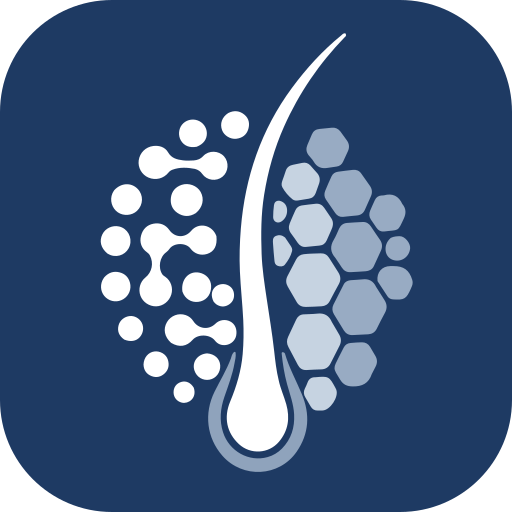

One mark, four tiers. The icon is never a reduced symbol.

Pick the tier by the size the icon is displayed at, not the size of the file you upload. Practo, Google, Instagram and WhatsApp all ask for a 512 px upload, then show it at 40–96 px through their own downscaler. Hand them the full mark and that downscaler mashes the 34-element field into grey.
| Tier | Display size | Elements | Colour | Construction |
|---|---|---|---|---|
full | 128 px and up | 36 | 7-tone ramp | Every path of the source artwork, untouched |
compact | 44 – 96 px | 32 | 3 tones | Sub-pixel specks culled, ramp flattened, 3-unit dilation |
micro | 24 – 40 px | 14 | 2 tones | Field normalised to discs, follicle dilated 8 units |
nano | 16 – 20 px | 9 | 2 tones | Field normalised to discs, follicle dilated 10 units |
Two techniques do the work. Dilation strokes each path in its own fill colour — without it a 23-unit dot renders at half a pixel and disappears. Disc normalisation applies below roughly 40 px, where irregular outlines anti-alias into grey mush; equal discs at each element’s own centroid land cleanly on the pixel grid.
| Destination | Upload | Built from | Shown at |
|---|---|---|---|
| Practo profile photo | profile-512.png | compact | ~64 px |
| Google Business Profile | profile-512.png | compact | 40 – 120 px |
| Instagram & Facebook | profile-512.png | compact | 32 – 110 px |
| WhatsApp Business | profile-512.png | compact | 48 px |
| Browser tab | favicon.svg + favicon.ico | compact / nano + micro | 16 – 20 px |
| iOS home screen | apple-touch-icon.png | compact, hard square | 60 – 180 px |
| Android / PWA | icon-192.png, icon-512.png | compact / full | 48 – 192 px |
favicon.ico holds three separately rendered images — 16 px from nano, 32 and 48 from micro — rather than one image resampled three times. It must sit at the site root: some crawlers request /favicon.ico directly and ignore the <link>.